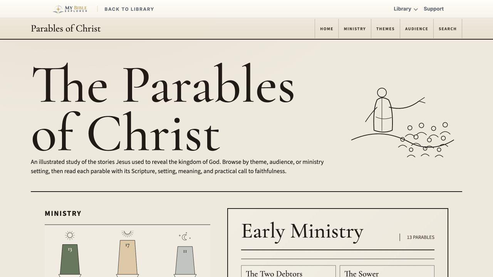

Know the Word.•Live the Word.
For anyone who has opened the Bible and wondered, Where do I start? These resources are here to help you read slowly, ask better questions, and meet God in the text.
Studies you can open now

Learn how to read carefully.

Bring your whole heart to God.

Trace the stories Jesus told.

Grace that becomes obedience.

See God steady His people.

Follow the symbols to Christ.

See the gospel in symbols.

Clarity without fear.
The problem
But people are not uninterested. Around the world, about one in three say they want to understand the Bible better. What many need is a clear place to begin, a little confidence, and patient help along the way.
Something is stirring
He had the scroll of Isaiah open in front of him, but the meaning was still out of reach. He was not careless or uninterested. He was honest enough to say, I need help.
Philip did not lecture from a distance. He sat close, started with the passage the man was already reading, and patiently helped him see Jesus in the text.
That same need is still here. More than 250 million people with no Christian background say they want to learn more, but opening the Bible for the first time can still feel overwhelming.
That is why this exists: to make room for honest questions, open Scripture slowly, and help the next step feel possible.
Why this exists
You do not need to be a scholar to begin reading the Bible. Most of us just need someone to slow things down, point out what matters, and help us ask better questions without feeling lost.
That is what these resources are for: to make Scripture easier to approach, easier to understand, and easier to live.
Start here
If you are not sure where to begin, start with Hermeneutics. It gives you a simple way to read with context, care, and confidence.
Open the guide →Bring joy, grief, anger, and gratitude honestly before God.
See kingdoms rise and fall while God keeps His people steady.
Move through the visions with worship, patience, and hope.
See how the sanctuary points to Christ and the story of salvation.
Study final events with Scripture open and fear turned down.
Walk through righteousness by faith, grace, obedience, and life in the Spirit.
Browse the stories Jesus used to reveal the kingdom, mercy, judgment, and faithful living.
More studies are on the way.
Help us build what helps
Is there a book, chapter, or question you wish someone would walk through with you? Tell us what would help, and we will keep building around real questions from real readers.
Support the work
Every study here is free, and we want it to stay that way. If these tools have helped you, or if you want more people to read the Bible with confidence, your gift helps us build the next study.
Donate with PayPalGive once or monthly. Every gift helps us keep building the library.
Ready when you are
Open a path, take your time, and let Scripture do its work.
Explore the library